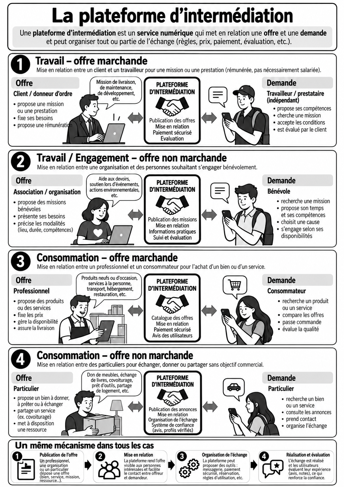
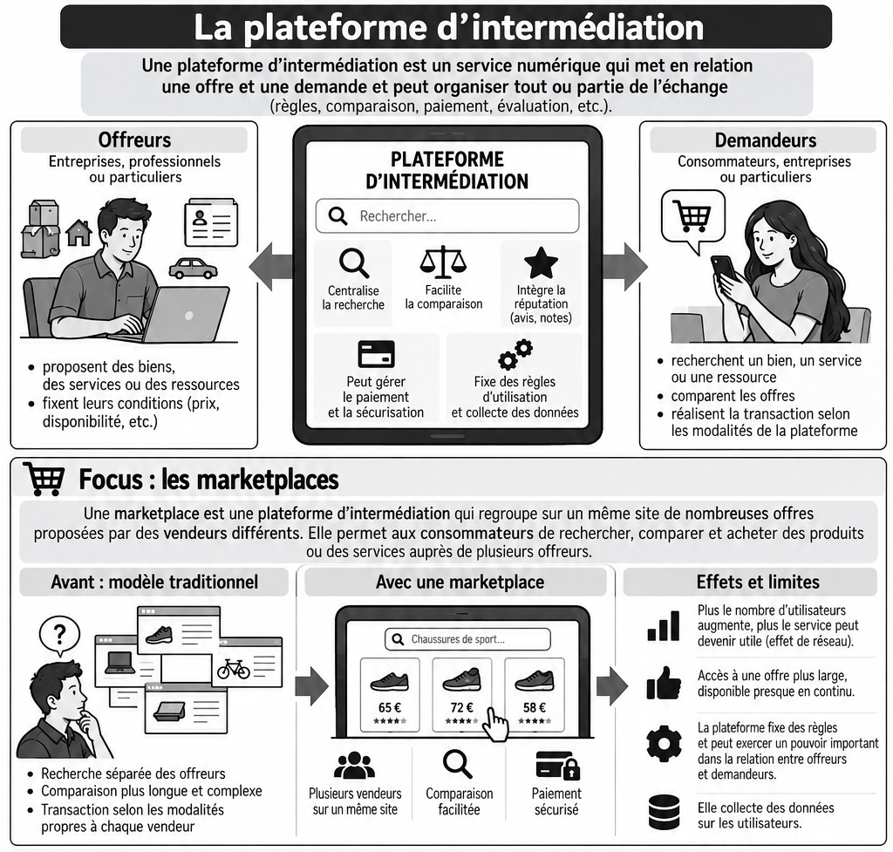
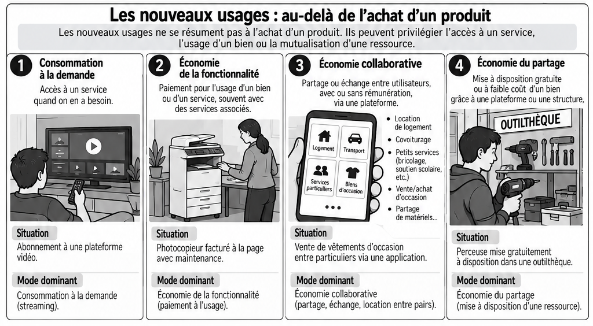
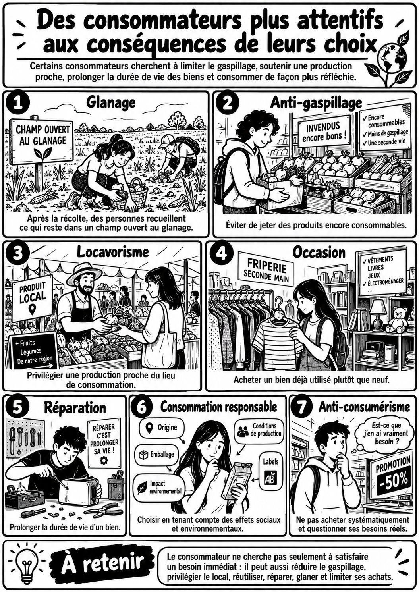

Problématique : Les organisations doivent-elles seulement s’adapter aux changements de modes de vie, ou contribuent-elles aussi à les transformer ?
Capacités visées :
☐ Analyser les évolutions des modes de vie et de consommation à prendre en compte par le management des organisations.
1. Des modes de vie bouleversés par une révolution technologique
1.1 Observer : une journée devenue ordinaire
Document 1 - La journée de Sami
Question 1
Repérez les changements de modes de vie visibles dans cette journée en les classant en trois catégories : travail, consommation et vie connectée. Réponse sur feuille — reprenez le numéro de la question dans votre réponse. |
Afficher la correction
Travail : télétravail et coworking. Consommation : récupération d’invendus et voiture partagée. Vie connectée : réservation par application, smartphone, montre connectée et message professionnel tardif.
1.2 Pourquoi parler de révolution technologique ?
Document 2 – La révolution industrielle
Une révolution technologique est une transformation profonde et durable provoquée par un ensemble d’innovations qui modifient fortement les façons de produire, de travailler et de vivre. La révolution industrielle en est un exemple majeur : à partir de la fin du XVIIIᵉ siècle, la machine à vapeur, la mécanisation puis le développement des usines ont profondément transformé la production. Le travail s’est déplacé vers de nouveaux lieux, les métiers ont évolué, les villes se sont développées et les modes de vie ont été durablement modifiés. On parle donc de révolution lorsque la technologie ne change pas seulement un outil, mais transforme plusieurs dimensions de la société. |
Astuce 1 – TIC : Technologies de l’Information et de la Communication
Les technologies de l’information et de la communication (TIC) regroupent les outils et techniques permettant de produire, traiter, stocker et transmettre de l’information sous forme numérique. Constatez dans le document 1, comment ces technologies modifient plusieurs dimensions de la vie quotidienne : travail, consommation, mobilité, communication et organisation du temps. |
Question 2
En vous appuyant sur les documents 1 et 2, montrez pourquoi le développement du numérique peut être qualifié de révolution technologique. Réponse sur feuille — reprenez le numéro de la question dans votre réponse. |
Afficher la correction
Une révolution technologique transforme durablement plusieurs dimensions de la société. Comme la révolution industrielle a modifié la production, le travail et les modes de vie, les TIC transforment aujourd’hui le travail à distance, la consommation, la mobilité, la communication et l’organisation du temps. Le numérique peut donc être qualifié de révolution technologique.
1.3 IA et robotisation : leur convergence ouvre-t-elle une nouvelle révolution ?
Document 3 - De l’intelligence artificielle à la « physical AI »
Les systèmes d’intelligence artificielle sont désormais capables de produire ou d’assister des tâches de rédaction, de traduction, de programmation, d’analyse ou de création. Parallèlement, les progrès de la robotisation permettent à des machines de percevoir leur environnement et d’y agir avec une autonomie croissante. La convergence de ces deux technologies peut étendre l’automatisation : elle ne concerne plus seulement certaines tâches physiques répétitives ou des traitements informatiques programmés à l’avance. Des systèmes peuvent désormais associer perception, traitement de l’information, décision et action physique. Les robots humanoïdes présentent à ce titre une particularité : leur forme leur permet potentiellement d’évoluer dans des environnements initialement conçus pour les humains. Cette évolution soulève la question de ses conséquences sur l’emploi. En 2025, l’Organisation internationale du Travail (OIT) estime qu’environ 25 % des emplois dans le monde présentent un certain degré d’exposition à l’IA générative, et environ 34 % dans les pays à revenu élevé. L’OIT considère que, dans de nombreux cas, les emplois devraient davantage être transformés que totalement supprimés, mais certains présentent un potentiel d’automatisation beaucoup plus élevé. Le World Economic Forum estime de son côté que les grandes transformations du marché du travail pourraient entraîner la disparition ou le déplacement d’environ 92 millions d’emplois d’ici 2030, soit environ 8 % des emplois actuels, tandis que d’autres emplois seraient créés. Ses travaux anticipent notamment un effet négatif de la robotique et des systèmes autonomes sur certains emplois. Goldman Sachs estime qu’en cas de large adoption de l’IA, environ 6 à 7 % de la main-d’œuvre américaine pourrait être déplacée, même si son scénario central retient un effet plus limité. Ces données constituent des projections et non des certitudes. Elles reposent sur des méthodes, des populations et des hypothèses différentes. De plus, un emploi exposé à l’IA n’est pas nécessairement un emploi supprimé : certaines tâches peuvent être automatisées tandis que d’autres restent réalisées par des humains. Les conséquences dépendront notamment du rythme d’adoption des technologies, de leur coût, des choix des organisations, des compétences disponibles et des règles collectives. Sources : OIT, Generative AI and Jobs: A Refined Global Index of Occupational Exposure, 2025 ; World Economic Forum, Future of Jobs Report 2025 ; Goldman Sachs Research, travaux sur l’IA et le marché du travail. |
Question 3
À partir de la définition d’une révolution technologique et du document 3, appréciez si le développement conjoint de l’IA et de la robotisation peut être considéré comme le début d’une nouvelle révolution technologique. Réponse sur feuille — reprenez le numéro de la question dans votre réponse. |
Afficher la correction
Le développement conjoint de l’IA et de la robotisation peut être considéré comme l’amorce d’une nouvelle révolution car il étend l’automatisation à des tâches cognitives et physiques et permet d’associer perception, traitement de l’information, décision et action. La qualification reste toutefois à apprécier car la diffusion, les usages et les effets futurs de ces technologies ne sont pas encore stabilisés.
Question 4
Comparez les projections présentées concernant les effets de l’IA et de la robotisation sur l’emploi, puis montrez pourquoi elles révèlent à la fois un risque important et une forte incertitude. Réponse sur feuille — reprenez le numéro de la question dans votre réponse. |
Afficher la correction
Les projections convergent sur une transformation importante de l’emploi mais ne mesurent pas exactement la même chose. L’OIT estime qu’environ 25 % des emplois mondiaux sont exposés à l’IA générative et privilégie un scénario de transformation des tâches. Le WEF évoque 92 millions d’emplois déplacés ou supprimés d’ici 2030 dans le cadre de grandes transformations, tandis que Goldman Sachs estime qu’environ 6 à 7 % de la main-d’œuvre américaine pourrait être déplacée en cas de large adoption. Ces données signalent un risque important, mais restent des projections dépendantes d’hypothèses différentes.
Document 4 – Pour aller plus loin : Pourquoi certains parlent-ils de « révolution anthropologique » ?
L’UNESCO a employé en 2025 l’expression « révolution anthropologique » pour souligner que l’intelligence artificielle ne transforme pas seulement les outils : elle interroge aussi la relation entre l’être humain et la machine et notre conception de l’intelligence. Pendant longtemps, un individu entrait progressivement dans la vie sociale et professionnelle par l’apprentissage : connaissances, compétences puis expérience s’accumulaient au cours de la vie. Aujourd’hui, il grandit dans un environnement où des systèmes artificiels possèdent déjà certaines capacités cognitives très avancées et où ces systèmes continuent eux-mêmes de progresser. Sur le marché du travail, la question peut alors devenir : quelles compétences humaines restent rares, complémentaires des machines ou difficilement automatisables ? Il s’agit ici de la valeur économique des compétences sur le marché du travail, et non de la valeur d’une personne. Cette évolution n’a pas une conséquence unique et automatique. Elle dépend des choix des organisations, des usages de la technologie, de la formation, de la réglementation et, plus largement, des choix collectifs sur la répartition des gains de productivité et l’organisation du travail. |
À retenir 1 – Une influence réciproque
Les technologies, les contraintes économiques, les valeurs sociales, les politiques publiques et les crises contribuent à faire évoluer les modes de vie. Les organisations doivent observer ces évolutions, mais leurs offres, leurs plateformes, leurs règles de travail et leurs innovations contribuent aussi à créer de nouveaux usages. |
2. Comment évolue le rapport au travail ?
2.1 Des attentes différentes selon les acteurs
Document 5 - ComptaNova envisage de passer au travail hybride
ComptaNova emploie 75 salariés actuellement présents cinq jours par semaine dans ses locaux. La direction envisage d’autoriser deux jours de travail à distance pour les fonctions compatibles. Lors d’une consultation interne, plusieurs salariés expliquent qu’ils souhaitent réduire leurs temps de trajet et mieux organiser leurs contraintes personnelles. Certains disent aussi parvenir à mieux se concentrer chez eux pour les tâches nécessitant peu d’interactions. La responsable des ressources humaines constate que plusieurs candidats interrogent désormais systématiquement l’entreprise sur ses possibilités de télétravail. Elle estime qu’une organisation plus flexible pourrait élargir le nombre de candidatures reçues. Plusieurs responsables d’équipe sont plus réservés. Ils craignent que certaines informations circulent moins facilement, que l’intégration des nouveaux salariés soit plus difficile et que les problèmes soient détectés plus tard. Ils souhaitent conserver des journées communes de présence. Le responsable informatique rappelle enfin que le travail à distance nécessite des équipements adaptés, des accès sécurisés et des règles précises concernant les données confidentielles. La direction doit décider si elle adopte le travail hybride et, dans ce cas, selon quelles modalités. |
Question 5
Identifiez les différents acteurs concernés par le projet de travail hybride et caractérisez les attentes ou préoccupations de chacun. Réponse sur feuille — reprenez le numéro de la question dans votre réponse. |
Afficher la correction
Salariés : réduire les trajets, mieux articuler vie professionnelle et personnelle et mieux se concentrer sur certaines tâches. RH/direction : élargir les candidatures et gagner en attractivité. Managers : préserver la circulation de l’information, l’intégration des nouveaux et la détection des problèmes. Informatique : sécuriser les accès et les données.
Question 6
Montrez que certains intérêts des salariés et de l’organisation peuvent converger, tandis que d’autres préoccupations peuvent entrer en tension. Réponse sur feuille — reprenez le numéro de la question dans votre réponse. |
Afficher la correction
Les intérêts peuvent converger lorsque la flexibilité répond aux attentes des salariés tout en renforçant l’attractivité et le recrutement de l’organisation. Des tensions apparaissent toutefois lorsque le travail à distance complique la coordination, l’intégration, le contrôle ou la sécurité.
Question 7
Proposez deux modalités d’organisation permettant à ComptaNova de concilier au mieux ces différents intérêts. Justifiez vos propositions. Réponse sur feuille — reprenez le numéro de la question dans votre réponse. |
Afficher la correction
Exemples : prévoir des journées communes de présence pour les activités collectives ; réserver le télétravail aux fonctions compatibles ; définir des règles de disponibilité et de partage de l’information ; sécuriser les accès ; prévoir des modalités particulières pour l’intégration des nouveaux. Les propositions doivent être justifiées par les intérêts des acteurs.
2.2 Télétravail, présentiel ou hybride : un choix de management discuté
Document 6 - Des entreprises font des choix différents
Certaines entreprises ont renforcé depuis 2024-2025 leurs obligations de présence au bureau. Les arguments avancés portent notamment sur la collaboration, l’innovation, la transmission informelle des informations, l’intégration des nouveaux salariés et la culture de l’organisation. D’autres organisations conservent des formes hybrides afin de répondre aux attentes de flexibilité, d’élargir leur vivier de recrutement ou d’organiser différemment les temps de concentration et les temps de coopération. Un exemple de position très tranchée est celui d’Elon Musk : en 2022, il a demandé aux salariés de Tesla concernés de passer au moins quarante heures par semaine au bureau, associant fortement présence physique, engagement et capacité à produire. Ces choix ne démontrent pas qu’un modèle est toujours supérieur aux autres. Ils montrent plutôt que le management doit décider quelles activités nécessitent une présence, quelles activités peuvent être réalisées à distance et quelles règles permettent de préserver coopération, équité et performance. Complément actualisé : McKinsey, « Returning to the office? Focus more on practices and less on the policy », 2025 ; Reuters, 1er juin 2022, sur la politique de retour au bureau de Tesla. |
Question 8
À partir du document, expliquez pourquoi certaines organisations choisissent de renforcer la présence sur site malgré les attentes de flexibilité d’une partie des salariés. Réponse sur feuille — reprenez le numéro de la question dans votre réponse. |
Afficher la correction
Certaines organisations renforcent la présence sur site pour favoriser la collaboration, l’innovation, les échanges informels, l’intégration des nouveaux salariés et la culture commune, même si une partie des salariés demande davantage de flexibilité.
Question 9
Montrez pourquoi le travail hybride peut constituer un compromis sans supprimer toutes les difficultés de management. Réponse sur feuille — reprenez le numéro de la question dans votre réponse. |
Afficher la correction
L’hybride peut combiner autonomie et flexibilité à distance avec des temps de coopération en présence. Il ne supprime cependant pas les difficultés de coordination, d’équité entre métiers, d’intégration, de contrôle de la charge, de confidentialité ou de cybersécurité.
Rappel 1 – Marque employeur
Lien avec le dossier 2.3 en MSGN — Les conditions de travail participent aussi à l’attractivité d’un employeur et pourront être reliées à la notion de marque employeur. |
2.3 Le télétravail s’est fortement développé
Document 7 – Évolution du télétravail
La DARES indique que la part des salariés pratiquant le télétravail au moins occasionnellement est passée de 9 % en 2019 à 26 % en 2023.
|
Question 10
Calculez l’évolution de la part des salariés télétravaillant au moins occasionnellement entre 2019 et 2023, en points de pourcentage. Réponse sur feuille — reprenez le numéro de la question dans votre réponse. |
Afficher la correction
26 % - 9 % = 17 points de pourcentage.
Question 11
Expliquez pourquoi cette évolution moyenne ne signifie pas que tous les métiers et tous les salariés sont concernés de la même manière. Réponse sur feuille — reprenez le numéro de la question dans votre réponse. |
Afficher la correction
Tous les métiers ne sont pas télétravaillables : certains exigent une présence physique, un équipement particulier ou une relation directe avec des personnes ou des biens. Les possibilités varient aussi selon les fonctions, les qualifications et l’organisation du travail.
2.4 De nouveaux risques de management avec le travail à distance et l’IA
Document 8 – Pour aller plus loin : Quand le travail devient moins visible
Le travail à distance conduit le manager à moins observer la présence physique et davantage à évaluer des résultats, des délais, une qualité de production et une contribution collective. L’IA peut accroître la productivité en automatisant certaines tâches. Elle peut aussi rendre plus difficile l’identification de la contribution réelle lorsque son usage n’est pas déclaré ou lorsqu’il contrevient aux règles de l’organisation. Des médias ont également documenté des cas de salariés en télétravail cumulant secrètement plusieurs emplois à temps plein. En France, le cumul d’emplois n’est pas interdit en soi, mais il doit notamment respecter les durées maximales de travail et certaines obligations contractuelles. Ces situations restent particulières : elles ne permettent pas de conclure que le télétravail conduit généralement à ces pratiques. Elles illustrent cependant un problème de management nouveau : comment contrôler la qualité, la disponibilité, la confidentialité et le respect des engagements lorsque le travail est moins directement observable ? Complément actualisé : Ministère du Travail, « Le cumul irrégulier d’emploi », mise à jour 2025 ; presse économique sur le phénomène d’« overemployment » ; Commission européenne, enquête 2025 sur l’usage de l’IA au travail. |
Question 12
Expliquez pourquoi le développement conjoint du télétravail et de l’IA peut conduire le management à faire évoluer ses modes de contrôle. Réponse sur feuille — reprenez le numéro de la question dans votre réponse. |
Afficher la correction
Le travail à distance réduit l’observation directe de l’activité tandis que l’IA peut automatiser ou masquer une partie de la contribution réelle. Le management doit donc davantage s’appuyer sur des objectifs, des délais, des critères de qualité, des règles d’usage de l’IA, la confidentialité et la contribution collective, sans basculer dans une surveillance permanente.
Notion 1 - Rapport au travail : temps, lieu, mode d’organisation
Le rapport au travail désigne la manière dont les individus vivent et organisent leur activité professionnelle, notamment au regard du temps de travail, du lieu où il s’exerce et de son mode d’organisation. Ne pas confondre contrôle et surveillance permanente : piloter un travail à distance ne signifie pas surveiller continuellement les salariés. Le management peut définir des objectifs, des délais, des critères de qualité, des règles d’usage de l’IA et des modalités de coopération sans contrôler en permanence la présence numérique. |
2.5 Travail indépendant et plateformes : autonomie ou dépendance ?
Document 9 - Micro-entrepreneuriat : dynamisme entrepreneurial ou transformation plus fragile de l’emploi ?
En 2025, la France a enregistré un record de 1 165 800 créations d’entreprises, soit une hausse de 5 % sur un an. Parmi elles, environ 758 600 relèvent du régime du micro-entrepreneur, soit près des deux tiers des créations. Les micro-entrepreneurs sont particulièrement nombreux dans les transports et l’entreposage : sur 112 800 créations dans ce secteur en 2025, 98 600 sont des micro-entreprises. L’Insee souligne leur forte présence dans la livraison et la logistique urbaine. Insee Cette dynamique ne signifie cependant pas que tous les créateurs poursuivent le même objectif. Parmi les micro-entrepreneurs immatriculés en 2018, l’Insee distingue plusieurs profils : 27 % exerçaient une activité salariée en complément, 26 % étaient chômeurs, 18 % étudiants, tandis que d’autres étaient déjà entrepreneurs ou hors du marché de l’emploi. Pour le groupe des chômeurs, créer son propre emploi ou son entreprise constitue la motivation principale. Insee Le régime de la micro-entreprise facilite l’accès au travail indépendant, mais il ne garantit ni revenu élevé ni pérennité. Parmi les personnes immatriculées en 2018, 28 % seulement sont encore actives sous ce régime cinq ans plus tard. La pérennité est particulièrement faible dans la livraison. Pour les micro-entrepreneurs encore actifs en 2023, le chiffre d’affaires moyen est d’environ 20 000 € par an et le chiffre d’affaires médian d’environ 12 000 €. Insee Dans le même temps, un nombre élevé de créations peut coexister avec beaucoup de disparitions d’entreprises. En 2025, la Banque de France recense environ 68 600 défaillances d’entreprises, soit un niveau supérieur d’environ 15 % à la moyenne observée entre 2010 et 2019. Une défaillance correspond à l’ouverture d’une procédure collective ; elle ne doit donc pas être confondue avec toute cessation volontaire d’activité. Banque de France Le travail indépendant via une plateforme pose également la question de l’autonomie réelle. En 2020, la Cour de cassation a requalifié en contrat de travail la relation entre Uber et l’un de ses chauffeurs. Elle a notamment relevé que le chauffeur ne constituait pas librement sa propre clientèle, ne fixait pas librement ses tarifs ni les conditions d’exécution de sa prestation, et que la plateforme disposait de moyens de contrôle et de sanction. Ces éléments caractérisaient un lien de subordination. Cour de cassation Enfin, les travailleurs indépendants présents dans la livraison peuvent être confrontés à une autre transformation : l’automatisation de l’activité elle-même. Uber indique développer un réseau combinant livreurs humains, robots de trottoir, véhicules autonomes et drones ; l’entreprise a annoncé en 2025 un partenariat avec Flytrex pour tester la livraison par drone via Uber Eats. |
Rappel 2 – Lien de subordination
Le lien de subordination existe lorsqu’un employeur peut donner des ordres, contrôler leur exécution et sanctionner les manquements. |
Question 13
À partir du document 9 : Déterminez pourquoi le développement de la micro-entreprise peut traduire à la fois une volonté d’entreprendre et une transformation plus fragile du rapport à l’emploi. Expliquez le paradoxe (chose qui parait défier la logique) auquel peuvent être confrontés certains micro-entrepreneurs de la livraison lorsque les plateformes pour lesquelles ils travaillent développent elles-mêmes des solutions de livraison autonomes. Réponse sur feuille — reprenez le numéro de la question dans votre réponse. |
Afficher la correction
1. Le développement de la micro-entreprise peut traduire une volonté d’autonomie ou de complément de revenu, mais aussi la nécessité de créer son propre emploi. Les données montrent une forte présence d’anciens chômeurs, une pérennité limitée et des chiffres d’affaires souvent modestes : il peut donc aussi révéler une fragilisation du rapport à l’emploi. 2. Le paradoxe est que certains livreurs créent leur propre activité grâce aux plateformes alors que ces mêmes plateformes développent des robots, véhicules autonomes ou drones susceptibles d’automatiser une partie de leur activité.
Rappel 3 - Notions transversales en droit : Des relations de travail de plus en plus diverses
Les organisations ne répondent pas toutes à leurs besoins de travail par un CDI classique. Elles peuvent notamment recourir au CDD, au contrat saisonnier, au travail temporaire (intérim) ou au CDI de chantier. Elles peuvent également faire appel à des travailleurs indépendants ou à des micro-entrepreneurs. Ces formes permettent aux organisations d’adapter plus facilement leurs ressources à leurs besoins, mais elles n’offrent pas toutes aux travailleurs le même degré de stabilité et de protection. |
Notion 2 – Plateforme d’intermédiation
La plateforme d’intermédiation est un service numérique qui met en relation une offre et une demande et peut organiser tout ou partie de l’échange (règles, prix, paiement, évaluation, etc.) Certaines relations de travail, sont concernées par ces plateformes d’intermédiation, mais aussi des modes de consommation.  |
3. Comment les modes de consommation évoluent-ils ?
Document 10 – Focus sur les plateformes d’intermédiation et les nouveaux usages
 |
3.1 Les plateformes d’intermédiation transforment la rencontre entre l’offre et la demande
Question 14
À l’aide du document 10, montrez que la marketplace constitue une forme particulière de plateforme d’intermédiation. Réponse sur feuille — reprenez le numéro de la question dans votre réponse. |
Afficher la correction
Une marketplace est une plateforme d’intermédiation car elle met en relation plusieurs vendeurs ou prestataires avec plusieurs acheteurs ou clients. Elle centralise la recherche et peut aussi organiser une partie de l’échange : comparaison, paiement, réputation, règles d’utilisation et collecte de données.
Question 15
Expliquez pourquoi une plateforme peut à la fois faciliter les échanges et acquérir un pouvoir important sur les offreurs et les demandeurs. Réponse sur feuille — reprenez le numéro de la question dans votre réponse. |
Afficher la correction
La plateforme facilite les échanges en centralisant l’offre, en simplifiant la comparaison, le paiement et l’évaluation. Mais elle peut aussi fixer les règles d’accès, classer les offres, prélever une commission, collecter des données ou limiter une transaction, ce qui lui donne un pouvoir important sur les offreurs et les demandeurs.
3.2 De nouveaux usages : acheter n’est plus la seule manière de consommer
Document 11 – Nouvelles manières de consommer
 |
Question 16
Comparez les quatre situations et montrez ce qui change dans le rapport du consommateur au bien ou au service. Réponse sur feuille — reprenez le numéro de la question dans votre réponse. |
Afficher la correction
Dans la consommation à la demande, le consommateur accède à un service quand il en a besoin. Dans l’économie de la fonctionnalité, il paie l’usage ou la performance plutôt que la propriété. Dans l’économie collaborative, des utilisateurs échangent, louent ou vendent entre pairs. Dans l’économie du partage, une ressource est mise à disposition gratuitement ou à faible coût. Le rapport au bien passe donc de la possession systématique à des formes d’accès, d’usage ou de mutualisation.
Question 17
Expliquez pourquoi ces nouveaux usages remettent en cause l’idée selon laquelle consommer signifie nécessairement acheter et posséder un bien. Réponse sur feuille — reprenez le numéro de la question dans votre réponse. |
Afficher la correction
Ces usages montrent qu’il est possible de satisfaire un besoin sans acheter et posséder durablement un bien : abonnement, paiement à l’usage, location, échange, partage ou mise à disposition peuvent remplacer l’acquisition classique.
3.3 Vers des modes de consommation plus responsables ?
Document 12 – Des consommateurs avertis
 |
Question 18
À partir de l’infographie, regroupez les pratiques présentées selon l’objectif recherché par le consommateur : réduire le gaspillage, prolonger l’usage, privilégier la proximité, limiter l’impact social ou environnemental, ou réduire sa consommation. Réponse sur feuille — reprenez le numéro de la question dans votre réponse. |
Afficher la correction
Réduire le gaspillage : glanage et anti-gaspillage. Prolonger l’usage : occasion et réparation. Privilégier la proximité : locavorisme. Limiter les impacts sociaux et environnementaux : consommation responsable. Réduire sa consommation : anti-consumérisme. Certaines pratiques peuvent poursuivre plusieurs objectifs à la fois.
Question 19
Expliquez pourquoi ces nouvelles attentes peuvent obliger les organisations à faire évoluer leur offre, leurs modes de production ou leurs services. Réponse sur feuille — reprenez le numéro de la question dans votre réponse. |
Afficher la correction
Ces attentes peuvent conduire les organisations à proposer des produits réparables ou reconditionnés, développer des offres d’occasion ou de location, réduire les déchets et invendus, privilégier certains approvisionnements locaux, améliorer l’information sur l’origine et les impacts, ou revoir leur modèle économique et leurs services.
Astuce 2 – La loi AGEC
La loi du 10 février 2020 relative à la lutte contre le gaspillage et à l’économie circulaire, dite loi AGEC, vise à faire évoluer le modèle « produire, consommer, jeter » vers une économie circulaire. Elle s’organise autour de cinq grands axes : réduire le plastique jetable, mieux informer les consommateurs, lutter contre le gaspillage et favoriser le réemploi, agir contre l’obsolescence programmée et mieux produire. Ministères de la Transition Écologique Elle prévoit notamment des dispositifs favorisant la réparation, le réemploi et une meilleure information du consommateur. L’indice de réparabilité, mis en place à partir de 2021 sur certaines catégories de produits, informe ainsi sur la possibilité de réparer un bien. Depuis 2025, un indice de durabilité remplace progressivement cet indice pour certaines catégories comme les téléviseurs et les lave-linges. Ministères de la Transition Écologique La loi prévoit également un bonus réparation, qui réduit le coût payé par le consommateur lorsqu’il fait réparer certains produits auprès d’un réparateur labellisé. |
Question 20
Montrez que la loi AGEC ne se contente pas d’encourager les consommateurs à changer leurs comportements mais conduit aussi les organisations à faire évoluer leurs pratiques. Réponse sur feuille — reprenez le numéro de la question dans votre réponse. |
Afficher la correction
La loi AGEC impose ou encourage des évolutions qui concernent directement les organisations : réduction de certains plastiques, information accrue du consommateur, lutte contre le gaspillage, développement du réemploi, réparabilité, durabilité et dispositifs favorisant la réparation. Les entreprises doivent donc adapter produits, information, services et pratiques.
Question 21
Expliquez comment les mesures prévues par la loi AGEC peuvent favoriser certaines pratiques présentées dans l’infographie. Réponse sur feuille — reprenez le numéro de la question dans votre réponse. |
Afficher la correction
Le bonus réparation favorise la réparation ; les indices de réparabilité et de durabilité encouragent l’allongement de la durée de vie ; les mesures contre le gaspillage et en faveur du réemploi soutiennent l’anti-gaspillage, l’occasion et le réemploi ; l’amélioration de l’information aide le consommateur à effectuer des choix plus responsables.
Notion 3 – Modes de consommation
Les modes de consommation désignent les manières dont les individus satisfont leurs besoins en choisissant comment accéder à des biens ou des services, les acquérir, les utiliser, les partager, les réparer ou éventuellement renoncer à les acheter. |
À retenir 2 – Les modes de consommation transforment les organisations
Recherche de rapidité, personnalisation, usage plutôt que propriété, mutualisation, réparation, proximité et réduction du gaspillage peuvent modifier les attentes des consommateurs. Les organisations peuvent alors devoir revoir leur offre, leurs sources de revenus, leur logistique, leurs partenaires et leur système d’information. Pour aller plus loin : Les habitudes acquises comme consommateur – rapidité, personnalisation, flexibilité, accès à la demande – peuvent aussi influencer certaines attentes vis-à-vis du travail. Une même personne est tour à tour consommateur, salarié, candidat ou usager : les évolutions observées dans une sphère de la vie peuvent donc se diffuser dans les autres. |
4. Quels sont les enjeux de la vie connectée ?
Document 13
Pour un utilisateur, un objet connecté peut apporter confort, personnalisation, prévention ou suivi en temps réel. Il peut aussi créer des risques de dépendance, de piratage ou d’atteinte à la vie privée. Pour une organisation, les données produites peuvent permettre de proposer de nouveaux services, améliorer la maintenance ou mieux connaître les usages. Mais elles créent aussi des responsabilités de sécurité, des besoins d’investissement et des risques d’image en cas de mauvaise utilisation ou de fuite de données. |
Notion 4 - Objet connecté
Un objet connecté, est un objet capable de recueillir, traiter ou transmettre des données par un réseau afin de fournir un service, une commande ou une information. |
Question 22
Identifiez deux apports et deux risques des objets connectés du point de vue de l’utilisateur puis du point de vue de l’organisation. Réponse sur feuille — reprenez le numéro de la question dans votre réponse. |
Afficher la correction
Utilisateur : apports possibles = confort, personnalisation, prévention, suivi en temps réel ; risques = dépendance, piratage, atteinte à la vie privée. Organisation : apports = nouveaux services, meilleure connaissance des usages, maintenance ; risques = cybersécurité, investissements, responsabilité et atteinte à l’image en cas de fuite ou de mauvaise utilisation des données.
5. Hyperconnectivité : quand les règles affichées et les pratiques se contredisent
Document 14 - L’équipe qui ne déconnecte jamais vraiment
Dans une entreprise de services, la charte précise qu’aucun salarié n’est obligé de répondre aux messages professionnels après 19 h. Pourtant, le responsable d’équipe envoie régulièrement des courriels et des messages instantanés tard le soir. Il ne demande jamais explicitement une réponse immédiate. Mais, lors des entretiens annuels, il souligne la « grande disponibilité » de certains salariés qui répondent rapidement en dehors des horaires habituels. Plusieurs membres de l’équipe déclarent alors consulter leurs messages le soir pour ne pas donner l’impression d’être moins engagés. |
Notion 5 - Hyperconnectivité et droit à la déconnexion
Hyperconnectivité : connexion fréquente, continue et sur plusieurs équipements, qui multiplie les sollicitations numériques. Droit à la déconnexion : droit du salarié à ne pas utiliser les outils numériques professionnels et à ne pas être sollicité en dehors de son temps de travail afin de préserver les temps de repos, la santé et la vie personnelle. Exemple concret – Pronote : dans les établissements scolaires, l’outil d’échange avec les élèves et les familles peut intégrer des paramètres ou plages de déconnexion. Cet exemple montre que le droit à la déconnexion peut être soutenu par le paramétrage de l’outil, mais que son effectivité dépend aussi des pratiques de communication et de management. |
Question 23
Montrez pourquoi le problème rencontré par cette équipe relève du management et pas seulement des comportements individuels. Réponse sur feuille — reprenez le numéro de la question dans votre réponse. |
Afficher la correction
Le problème relève du management car le responsable crée une norme informelle de disponibilité : il envoie des messages tardifs et valorise ceux qui répondent rapidement. Les salariés adaptent donc leur comportement aux signaux donnés par le manager, même si aucune réponse immédiate n’est officiellement exigée.
Question 24
Expliquez pourquoi la charte de déconnexion est insuffisante dans cette situation et proposez deux décisions permettant de rendre le droit à la déconnexion plus effectif. Réponse sur feuille — reprenez le numéro de la question dans votre réponse. |
Afficher la correction
La charte est insuffisante car les pratiques managériales la contredisent. Décisions possibles : programmer l’envoi différé des messages, définir des plages de non-sollicitation, ne pas valoriser la disponibilité hors horaires, prévoir un canal réservé aux urgences, suivre la charge de travail et faire respecter l’exemplarité des managers.
6. Les organisations sont-elles démunies face aux évolutions ?
Document 15 – Des organisations confrontées à des évolutions
Cas A – Une entreprise de conseil constate que de nombreux candidats refusent ses offres lorsqu’aucune journée de télétravail n’est possible. Elle décide d’introduire deux jours de travail à distance pour les fonctions compatibles. Cas B – Une plateforme lance un service permettant de commander en quelques secondes un repas, de suivre la préparation et la livraison en temps réel et de mémoriser les préférences. À mesure que le service se diffuse, une partie des clients s’habitue à l’immédiateté et attend le même niveau de rapidité dans d’autres services. |
Astuce 3 - Analyser une évolution et ses implications
1. Décrire l’évolution observable. 2. Identifier les attentes ou comportements qui évoluent. 3. Repérer les acteurs concernés et leurs points de vue. 4. Analyser les conséquences pour l’organisation et le management. 5. Vérifier si l’organisation se contente de s’adapter ou contribue aussi à diffuser un nouvel usage. |
Question 25
Démontrez que les interactions entre les organisations et leurs parties prenantes peuvent les influencer l’une l’autre. Réponse sur feuille — reprenez le numéro de la question dans votre réponse. |
Afficher la correction
Les interactions sont réciproques. Dans le cas A, les attentes des candidats influencent l’entreprise, qui introduit du télétravail. Dans le cas B, l’organisation crée un service qui diffuse une nouvelle habitude d’immédiateté chez les clients. Les parties prenantes influencent donc les organisations, mais les organisations peuvent également transformer les comportements de leurs parties prenantes.
7. Synthèse générale
Les changements de modes de vie s’imposent en partie aux organisations parce qu’ils transforment les attentes des salariés, des candidats, des clients et des usagers. Le management doit arbitrer entre plusieurs points de vue : autonomie et flexibilité, coopération et contrôle, attractivité et équité, rapidité et responsabilité, innovation et maîtrise des risques. Les organisations ne sont cependant pas passives : leurs plateformes, leurs services, leurs règles de travail et leurs innovations peuvent accélérer ou créer de nouveaux usages. Les progrès de l’IA et de la robotisation rendent ces arbitrages encore plus importants en transformant les tâches, les compétences recherchées et la complémentarité entre travail humain et technologies. |